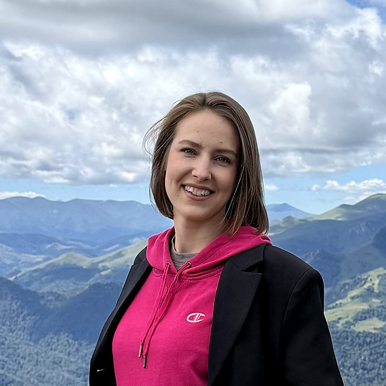
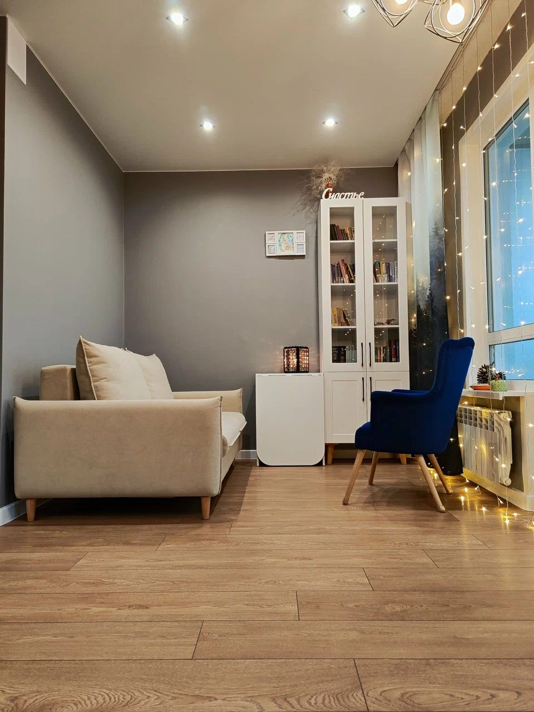
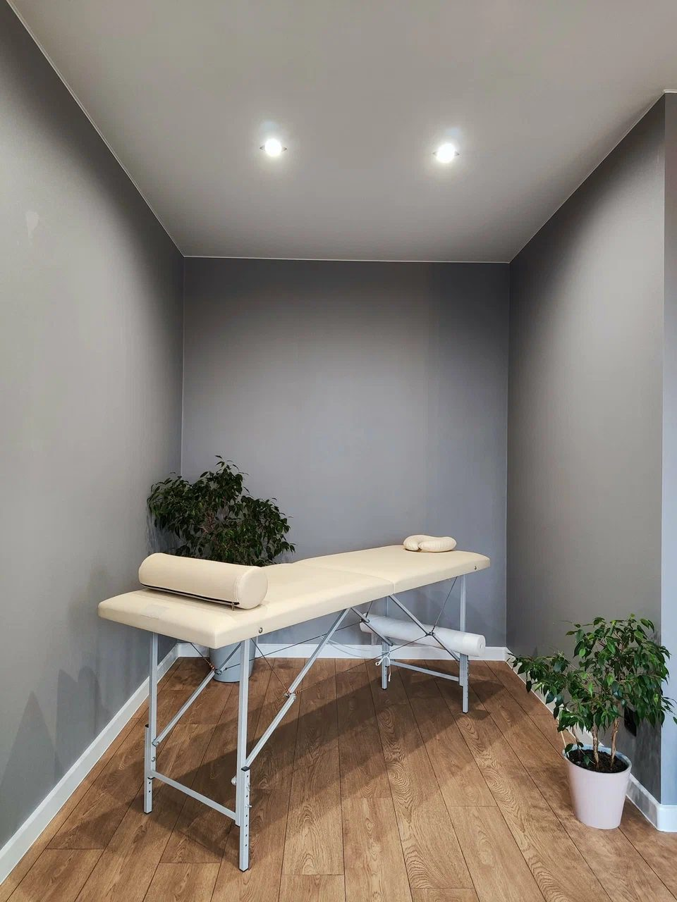
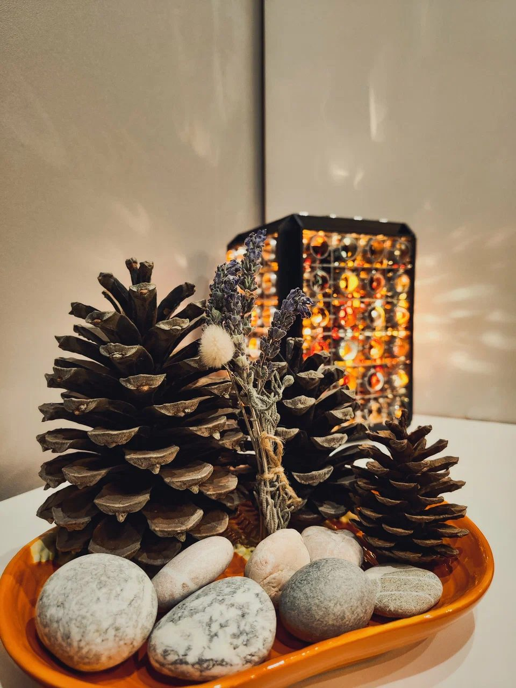

Очно в студии
Встреча в студии на Шмидта
Тихий кабинет, чай и час только про то, что важно. Подходит, если хочется выйти из привычной обстановки.
1 800 ₽ / 60 минут
ЗаписатьсяСтудия ментального здоровья: консультации психолога, йога и массаж в одном спокойном пространстве. Для тех, кто много работает, много думает и давно не отдыхал по‑настоящему.

психолог, автор студии, инструктор по йоге
Елена ведёт консультации и практики сама. В работе с тревогой, выгоранием и напряжением она сочетает три подхода — и подбирает то, что подходит именно в этой ситуации.
Разовые встречи без абонементов. Оплата переводом или наличными.
Тихий кабинет, чай и час только про то, что важно. Подходит, если хочется выйти из привычной обстановки.
Тот же формат и тот же специалист — по видеосвязи. Большинство отзывов на Картах именно про онлайн.
90 минут спокойной практики для новичков и тех, кто весь день сидит.
700 ₽Классический по зонам, релаксирующий всего тела, медовый, антицеллюлитный. Спина 60 мин — 2 000 ₽, всё тело 90 мин — 4 000 ₽.
от 800 ₽Бумажный или электронный. Получатель сам выбирает: консультация, йога или массаж.
1 000 ₽Коротко: что беспокоит и какой формат удобнее. Ответ обычно в тот же день.
Только по записи, без очередей. Очно в студии или онлайн по видео.
60 минут про то, что важно. Оплата после встречи переводом или наличными.
“Елена провела чудесную консультацию онлайн. Тревога ушла, осталось спокойствие. Профессионализм и эмпатия.
“Работаю с Еленой по видео. Стала спокойнее и устойчивее эмоционально, советы помогают и в родительстве.
“Очень приятная спокойная атмосфера, уютная студия. Удаётся и расслабиться, и укрепить мышцы.
Генетика — около 20 %, среда — 20 %, а больше половины — то, как мы живём каждый день.
здесьСенека и Пифагор писали об этом задолго до модных практик осознанности.
яКак выйти из позиции жертвы и вернуть себе право решать.


